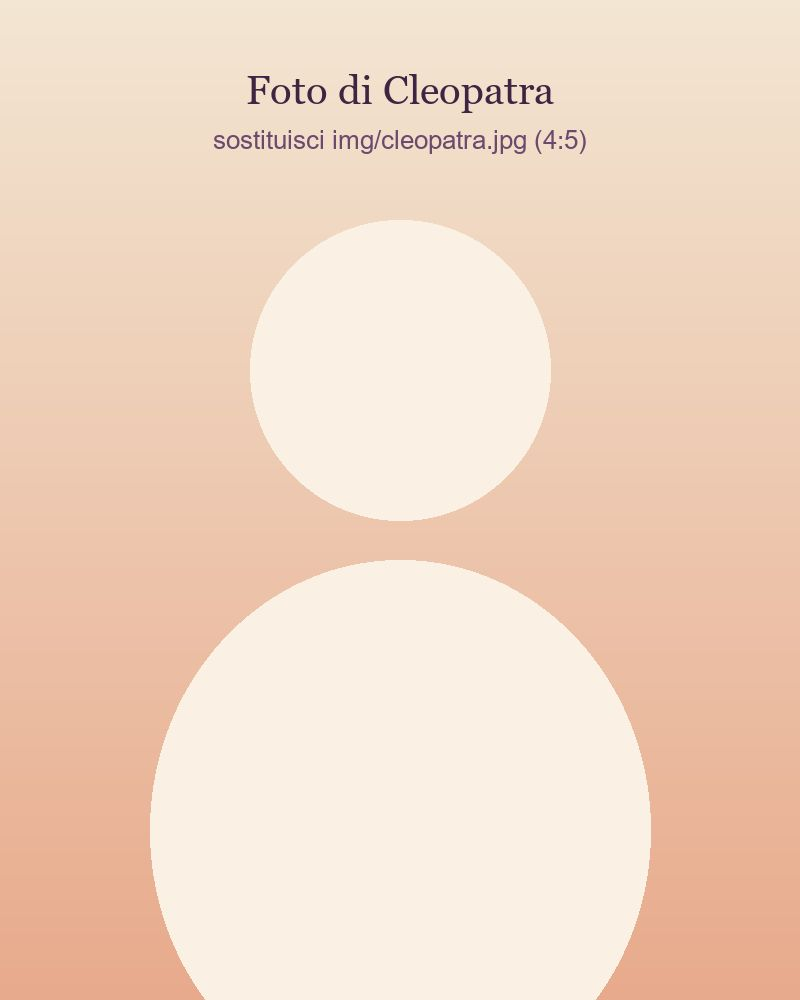

Rilassamento profondo
Il respiro rallenta, i muscoli si sciolgono, la mente si quieta. Spesso ci si rialza con una piacevole sensazione di leggerezza.
Reiki · Trattamenti e corsi
Il Reiki è un momento di rilassamento profondo: ti sdrai, chiudi gli occhi e per un po' lasci andare pensieri e tensioni. Propongo trattamenti individuali e corsi per chi vuole imparare a praticarlo.

Cos'è il Reiki
Il Reiki è una tecnica di origine giapponese, sviluppata all'inizio del Novecento da Mikao Usui. Si basa sull'imposizione delle mani, appoggiate con leggerezza sul corpo o tenute poco sopra, per favorire un rilassamento profondo e una sensazione di riequilibrio e di calma.
Il respiro rallenta, i muscoli si sciolgono, la mente si quieta. Spesso ci si rialza con una piacevole sensazione di leggerezza.
Non si fanno manipolazioni, massaggi o pressioni: le mani si appoggiano con delicatezza, oppure restano a qualche centimetro dal corpo.
Togli solo le scarpe. Durante il trattamento sei sempre coperto e a tuo agio, e puoi chiedermi di fermarmi in qualunque momento.
Il mio approccio è etico e rispettoso: niente promesse miracolose, niente dogmi. Non serve "crederci" e non devi aderire a nessuna religione o filosofia.
Trattamenti individuali
Ci prendiamo qualche minuto per conoscerci: mi racconti come stai e cosa ti aspetti, e io ti spiego cosa succederà.
Ti stendi comodo sul lettino, con una coperta leggera se vuoi. Togli solo le scarpe.
Appoggio le mani con leggerezza su alcune zone del corpo, oppure le tengo a breve distanza, in silenzio o con una musica soffusa. Tu devi solo rilassarti.
Con calma ti rialzi, bevi un bicchiere d'acqua e, se ti va, mi racconti come ti senti.
Solo abiti comodi, possibilmente morbidi e senza cinture strette. Al resto penso io.
Prezzi e disponibilità su richiesta: scrivimi per prenotare un trattamento.
Corsi di Reiki
Il Reiki si impara per livelli, con calma. Ogni corso unisce un po' di teoria, tanta pratica e il tempo per fare tutte le domande che vuoi.
La storia e i principi del Reiki, l'attivazione e le posizioni per l'autotrattamento e per il trattamento ad altre persone. È il livello per chi vuole regalarsi ogni giorno un momento di benessere.
Si approfondisce la pratica e si imparano i simboli del secondo livello, che permettono anche il trattamento a distanza. Per chi ha già fatto il primo livello e vuole andare oltre.
Il percorso di maestria: si completa la conoscenza dei simboli e si impara a trasmettere il Reiki ad altri. Con il Karuna Reiki® si aggiungono nuovi simboli e un lavoro più profondo sulla compassione.
Date e prezzi dei corsi su richiesta: chiedimi quando parte il prossimo.
Il mio percorso
Da oltre quindici anni il Reiki fa parte della mia vita: prima per me stessa, poi per le persone che si affidano a me e per chi vuole imparare.
Accanto al Reiki mi sono formata nell'EFT (Emotional Freedom Techniques), una tecnica che unisce leggeri picchiettamenti su alcuni punti del corpo all'attenzione verso le proprie emozioni. Se ti incuriosisce, chiedimi pure: ne parliamo insieme.
Il Reiki è una pratica complementare di benessere, che favorisce il rilassamento. Non sostituisce in alcun modo diagnosi, terapie o cure mediche o psicologiche, e non va interrotta né modificata nessuna terapia in corso. Se hai un problema di salute, rivolgiti sempre al tuo medico: il Reiki può affiancare il suo percorso, mai prenderne il posto.
Domande frequenti
No. Non ti chiedo di credere in nulla: ti chiedo solo di sdraiarti e concederti un momento di pausa. Ognuno vive il trattamento a modo suo.
Dipende dalla persona e anche dalla giornata. C'è chi sente calore sotto le mani, chi un piacevole formicolio, chi semplicemente si rilassa così tanto da addormentarsi. Non c'è un modo giusto di viverlo.
Sì, il Reiki può affiancare le cure che stai seguendo, ma non le sostituisce mai: continua sempre a seguire le indicazioni del tuo medico, e se hai dubbi chiedi a lui.
No, il primo livello è aperto a tutti, anche a chi non ha mai ricevuto un trattamento. Se vuoi, prima del corso possiamo fare un trattamento insieme, così ti fai un'idea.
Scrivimi per prenotare un trattamento o per sapere quando parte il prossimo corso. Ti rispondo io, con calma.